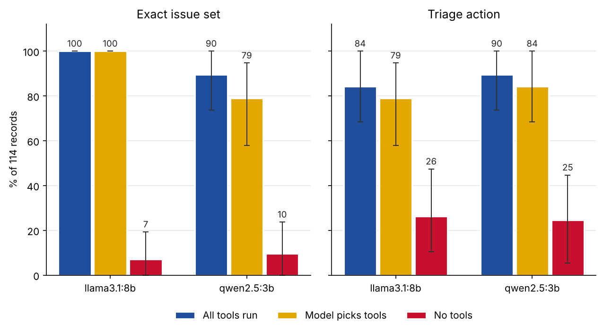

Experiment · Agentic AI · Biodiversity data
Small AI models checking biodiversity records found every listed issue when the checks were run for them, and almost none without
EcoRecordTriageBench: can a small local AI agent run the right data-quality checks on a citizen-science record and send it to the right curator queue?
By Muzammal Hussain · 14 November 2026 · Research update
Millions of wildlife sightings reach biodiversity databases every year, and each one has to be checked before scientists use it: are the coordinates possible, does the date make sense, is there a photo, do identifiers agree? GBIF and iNaturalist already have mature automatic checks for this. The question here is narrower. If an AI agent is given those checks as tools, does it use them properly, and does it then choose the right next step for the record? I built EcoRecordTriageBench to test that with two small models running on a laptop.
Key findings
- The checks did the detecting. With every validator run, the exact list of issues was right for 100% (llama3.1:8b) and 90% (qwen2.5:3b) of records. With no tools it fell to 7% and 10%.
- Finding the issues was not the same as acting on them. llama3.1:8b listed the correct issues for all 114 records but chose the correct curator action for only 84%.
- The smaller model lost more when it chose its own checks. qwen2.5:3b ran 87% of the checks it needed and its exact issue sets dropped from 90% to 79%; llama3.1:8b ran 96% and lost nothing.
- Museum specimens were judged like field photos. Before filtering, llama3.1:8b gave a photo or identification issue to a third of the records that are not field observations, and no setting got the specimen control right.
Setup
The benchmark has 114 synthetic records written in Darwin Core fields: 19 scenario families, six variants each. Families cover clean field observations, impossible or missing coordinates, bad or future dates, missing photos, captive animals, weak identification agreement, conflicting species names, records with two problems, and preserved museum specimens, which should not be held to field-photo rules. Each record has a known set of issues and one correct action from a fixed policy: ready for research, request a correction, send to community identification, or send to expert review.
The agent has five read-only checking tools (record type, coordinates, dates, verifiability, identification) and was tested in three ways. In all tools, every check that applies to the record runs and the model reads the results. In model picks tools, the model first decides which checks to run. In no tools, it reads the record and the issue definitions and decides on its own. I ran qwen2.5:3b and llama3.1:8b through Ollama on a Mac at temperature 0: 912 model calls, none with an unreadable reply. Intervals are 95% bootstrap intervals that resample the 19 families, so they are wide.

Results
| Measure | llama3.1:8b all tools | llama3.1:8b picks | llama3.1:8b no tools | qwen2.5:3b all tools | qwen2.5:3b picks | qwen2.5:3b no tools |
|---|---|---|---|---|---|---|
| Exact issue set | 100% | 100% | 7.0% | 89.5% | 78.9% | 9.6% |
| Correct action | 84.2% | 78.9% | 26.3% | 89.5% | 84.2% | 24.6% |
| Issue recall | 100% | 100% | 31.6% | 89.5% | 78.9% | 31.6% |
| Issue precision | 100% | 100% | 20.6% | 100% | 100% | 12.9% |
| Clean records left clean | 100% | 100% | 0% | 100% | 100% | 41.7% |
| Needed checks it chose to run | – | 96.1% | – | – | 86.5% | – |
| Field-photo rule given to non-observations | 33.3% | 33.3% | 0% | 0% | 22.2% | 100% |
For comparison, a rule agent that simply runs every applicable check and applies the policy scores 100% on every measure; that is a test of the software, not of a model.
Where the models went wrong
Without tools, both models guessed. llama3.1:8b put an issue on every clean record, and both found only about a third of the real problems. The gap to the all-tools condition was 93 points of exact issue sets for llama3.1:8b and 80 points for qwen2.5:3b.
With tools, the errors moved from finding problems to deciding what to do. llama3.1:8b's wrong actions came from three whole families: the museum-specimen control, a specimen with an impossible latitude, and a field record with both a date mismatch and weak identifier agreement. qwen2.5:3b missed issues instead, such as a zero coordinate or low agreement, and when it picked its own checks it failed every record with missing or non-numeric coordinates.
What this means
On this test, the value comes from the deterministic checks, which already exist at GBIF and iNaturalist. A small model can read their results reliably, but mapping a set of issues to the right curator queue was the weaker step, and specimens exposed it. If an agent is used here, the checks to run should be fixed by record type, and the policy step should be checked by rules or by a person rather than left to the model.
Limitations
The records are synthetic and the triage policy is my own simplification, not GBIF or iNaturalist policy. Labels come from the same recipes that create the records. Two small models, one seed and one machine were tested. Nineteen families give wide intervals, and only three families are not field observations. Biodiversity curators have not yet reviewed the rules, and the results say nothing about real submissions or about species identification.
Background: GBIF, Occurrence issues and flags (technical documentation); iNaturalist, Data Quality Assessment and Research Grade criteria; Campbell et al. (2023), Identifying the identifiers: how iNaturalist facilitates collaborative, research-relevant data generation, BioScience 73(7), 533–541; Dorm et al. (2026), Large language models possess some ecological knowledge, but how much?, Ecological Informatics 95, 103699.